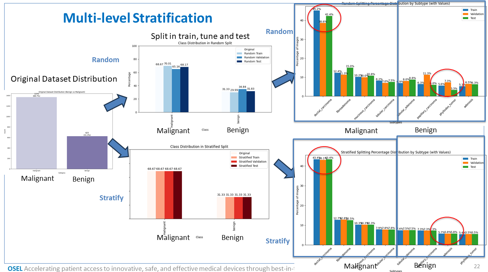

Stratification and Dataset Splitting
WSI.stratification module
Stratification and Visualization Utilities for Dataset Splitting
Created on Mon Apr 7 10:54:59 2025
@author: Tanviben.Patel
- class WSI.stratification.stratification(root_dir: str, categories: dict, test_size=0.2, val_size=0.25)[source]
Bases:
objectA class to perform random and stratified train/val/test splitting on image datasets with hierarchical class structure (category and subtype).
Attributes
- root_dirstr
Root directory of the dataset.
- categoriesdict
Dictionary defining category and subcategory structure.
- test_sizefloat
Proportion of dataset to include in the test split.
- val_sizefloat
Proportion of remaining dataset to include in the validation split.
- dfpd.DataFrame
DataFrame containing image paths and labels.
- __init__(root_dir: str, categories: dict, test_size=0.2, val_size=0.25)[source]
Initialize the Stratification object and load the dataset.
Parameters
- root_dirstr
Root path to the dataset.
- categoriesdict
Dictionary with keys as category names and values as dicts with ‘path’ and ‘subcategories’ list.
- test_sizefloat, optional
Fraction of data to reserve for testing, by default 0.2.
- val_sizefloat, optional
Fraction of training data to reserve for validation, by default 0.25.
- static plot_category_distribution(df, title='Category Distribution')[source]
Plot bar chart of category distribution with counts and percentages.
Parameters
- dfpd.DataFrame
DataFrame with ‘category’ column.
- titlestr, optional
Title of the plot, by default “Category Distribution”
- static plot_category_split_distribution(split_dict, title='Category Distribution by Split')[source]
Plot category-level distribution across train/val/test splits with counts and percentages.
Parameters
- split_dictdict
Dictionary with keys ‘Train’, ‘Validation’, ‘Test’ and value counts.
- titlestr, optional
Title of the plot, by default “Category Distribution by Split”
- static plot_subtype_distribution(splits_dict, title='Subtype Distribution')[source]
Plot subtype-level distribution across train/val/test splits in percentages.
Parameters
- splits_dictdict
Dictionary with keys ‘Train’, ‘Validation’, ‘Test’ and values as subtype counts.
- titlestr, optional
Title of the plot, by default “Subtype Distribution”
- split_random()[source]
Perform random train/val/test split based on subtype (not stratified).
Returns
- tuple of pd.DataFrame
X_train, X_val, X_test DataFrames.
- split_random_by_category()[source]
Perform random train/val/test split based on category (not stratified).
Returns
- tuple of pd.DataFrame
X_train, X_val, X_test DataFrames.
About this module
This module provides the stratification class for splitting image datasets into training, validation, and testing subsets, with support for both random and stratified approaches.
Stratification can be performed at two levels: - By category (e.g., Tumor vs. Normal) - By subtype (e.g., Tumor subtypes like Adeno, Squamous, etc.)
The module also offers visualization tools to help assess class distribution across different dataset splits — which is especially important in medical imaging and machine learning applications to avoid data imbalance and biased model training.
{kind=link}
Loading Required Packages
To use the stratification module, import the main class:
from WSI.stratification import stratification
Dependencies (install if not already available):
pip install pandas seaborn matplotlib scikit-learn
Dataset Organization
The input dataset should be structured into categories and subcategories (subtypes). The module expects this directory layout:
dataset_root/
Category1/
SubtypeA/
image1.jpg
image2.jpg
SubtypeB/
Category2/
SubtypeC/
To define this in code, use a dictionary like:
categories = {
"Category1": {
"path": "dataset_root/Category1",
"subcategories": ["SubtypeA", "SubtypeB"]
},
"Category2": {
"path": "dataset_root/Category2",
"subcategories": ["SubtypeC"]
}
}
Create the Stratification Object
Once the dataset structure is defined, initialize the stratification handler:
stratifier = stratification(root_dir="dataset_root", categories=categories)
This will parse the directory structure and internally store metadata in a Pandas DataFrame.
Perform Dataset Splits
The following split options are available:
Random Split by Subtype (unbalanced but fast):
X_train, X_val, X_test = stratifier.split_random()
Stratified Split by Subtype (preserves subtype distribution):
X_train, X_val, X_test = stratifier.split_stratified()
Random Split by Category:
X_train, X_val, X_test = stratifier.split_random_by_category()
Stratified Split by Category:
X_train, X_val, X_test = stratifier.split_stratified_by_category()
Visualize Class Distribution
Plot full dataset distribution by category:
stratifier.plot_category_distribution(stratifier.df)
Compare splits across sets (Train/Val/Test) for categories:
split_dict = {
"Train": X_train["category"].value_counts().to_dict(),
"Validation": X_val["category"].value_counts().to_dict(),
"Test": X_test["category"].value_counts().to_dict()
}
stratifier.plot_category_split_distribution(split_dict)

Compare splits across sets for subtypes:
subtype_dict = {
"Train": X_train["subtype"].value_counts().to_dict(),
"Validation": X_val["subtype"].value_counts().to_dict(),
"Test": X_test["subtype"].value_counts().to_dict()
}
stratifier.plot_subtype_distribution(subtype_dict)

Saving and Reusing Splits (Optional)
You can save the splits as CSV files for reproducibility:
X_train.to_csv("splits/train.csv", index=False)
X_val.to_csv("splits/val.csv", index=False)
X_test.to_csv("splits/test.csv", index=False)
Later, you can reload them as DataFrames for model training:
import pandas as pd
train_df = pd.read_csv("splits/train.csv")